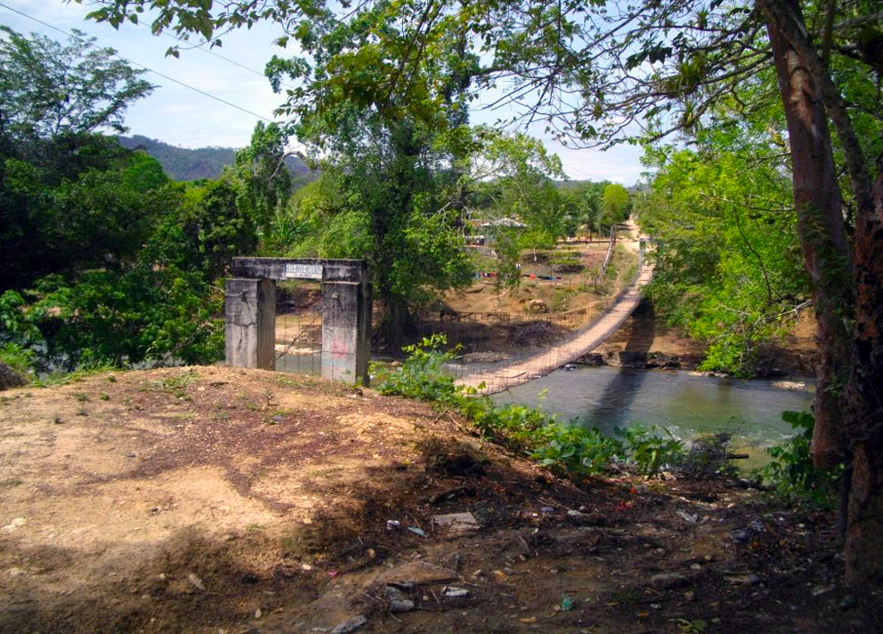
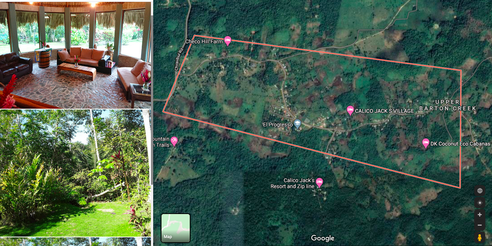
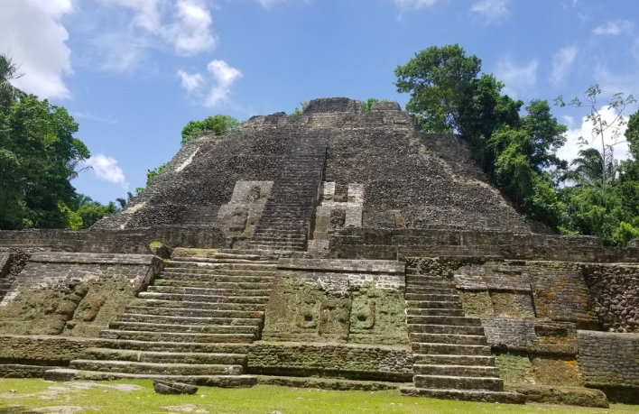
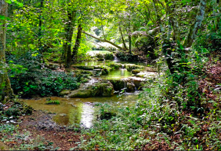
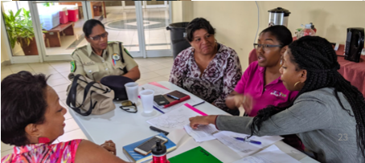

Arenal  Region of incresaed natural tourism, on the border of Guatemala and Belize.
Benque Viejo Poputation: a number
Cristo Rey Poputation: a number
El Progresso  Poputation: a number
Georgeville Poputation: a number
Lower Barton Creek Lower Barton Creek is a small village, that was founded in 1970 by Mennonites from Shipyard in Belize. It is home of the most conservative German speaking "Russian Mennonites" in Belize. It is similar to conservative Mennonite settlements in Bolivia.
San Antonio Poputation: a number
San Ignacio Poputation: a number
San Jose Succoltz Poputation: a number
Santa Elena Poputation: a number
Upper Barton Creek Poputation: a number
Cultural/Archeological Sites  This is a tourist site with important archeological and cultural significance
Nature/Recreational Sites  This is a tourist site with cool nature
Learn about this viewer, cool work went into it. Developed with stakeholders in the community, to be used for research, communication, and anything you might need.
The SDP
Looked at all the scenarios to see how different activities work in the same region.
How to Use the Viewer
Click on the checkboxes, can also download data and get information on different management scenarios.
